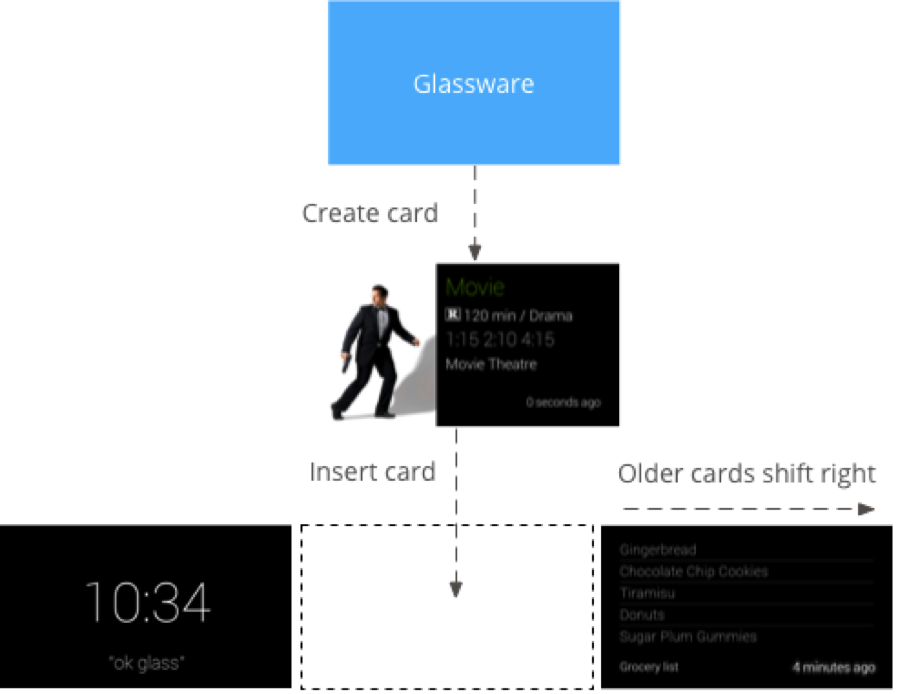
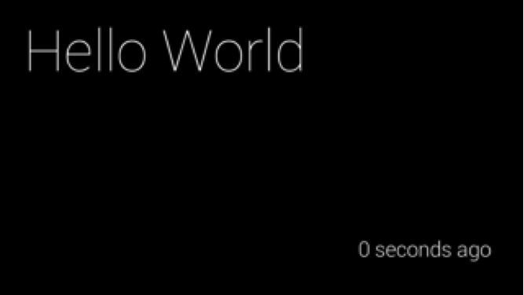
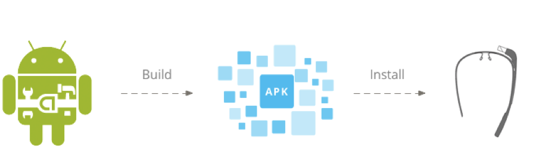
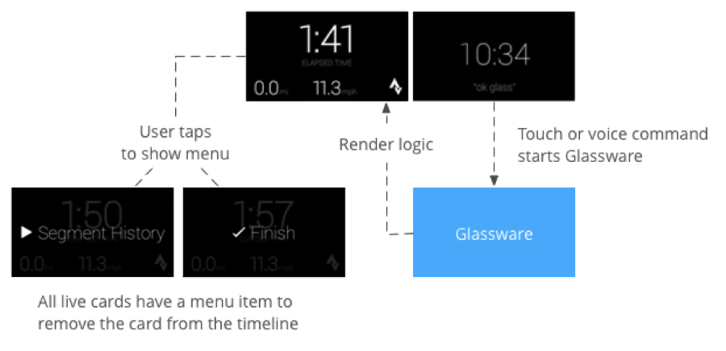
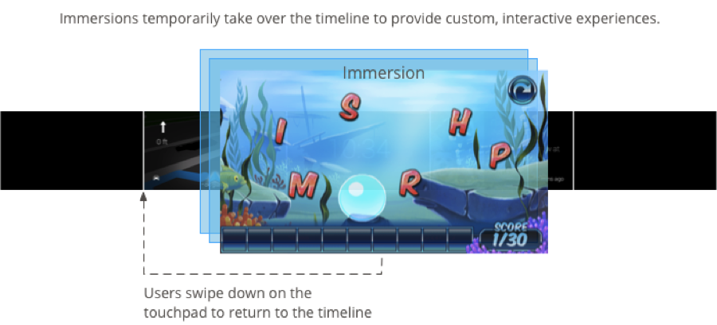
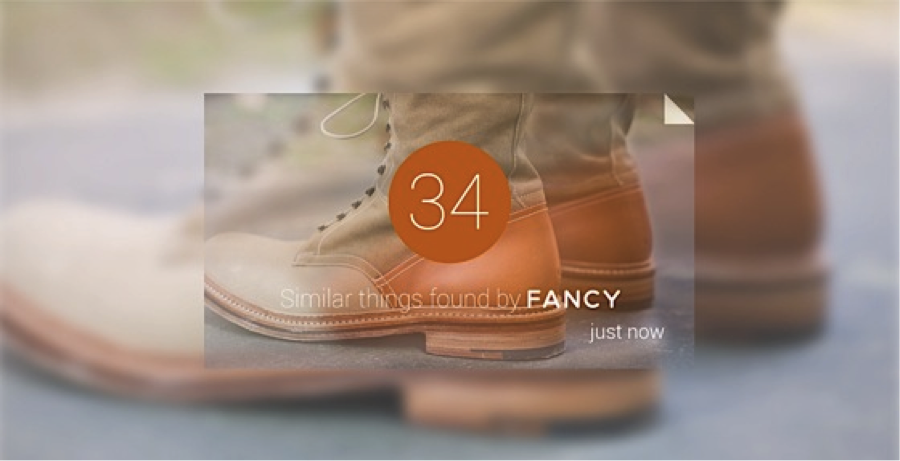

“OK, Glass. Google how can I get started with your platform?”
The Glass platform enables developers to write Android code that runs directly on Glass or RESTful web services that effectively leverage the company’s scale and infrastructure. In addition, Google has proposed design patterns that help developers determine how to best utilize the two API options when developing Glassware.
The Glass Development Kit (GDK) is an add-on to the Android SDK that lets developers build Glassware that directly runs on glass. In general, the GDK is useful for real-time user interaction, offline functionality, and access to low-level hardware features. The GDK enables developers to experiment with the full potential of Glass. This means that it will not only make augmented reality apps on Glass a reality, but also give any mobile app with advanced graphics the ability to run on Glass.
The Mirror API enables developers to build Glassware in the language of their choice and provides an easy way to call web-based APIs to build web-based services but does not require running code on Glass. In general, the Mirror API is used for platform independence, common infrastructure, and built-in functionality. It enables developers to push and pull information asynchronously and then to display on Glass through its card-like interface. This is great for creating Glassware like news apps and social networking services that can use Glass to display statuses and updates in the primary timeline interface.
It is also possible to develop Glassware with a hybrid model that enables Mirror API Glassware to invoke GDK Glassware through a menu item to launch fuller user experiences that run directly on Glass.
OK, Glass. Google how does the Mirror API work?”
The Mirror API provides developers with client libraries to Glassware similar to web-based CRUD applications in the Go, Java, Microsoft .Net, PHP, Python and Ruby programming languages. Although the Mirror API does provide platform independence for developers, it more or less makes Glass an extension of existing social and news services – a glorified smartwatch that delivers notifications and updates right in front of your eyes.
The Mirror API takes advantage of static cards that display information relevant to the user at the time of delivery, such as periodic notifications. Through simple REST APIs, static cards can also start live cards or immersions for a more interactive experience. However, because it was not designed to receive requests from users that require instantaneous response, it does not provide a good user experience for functionalities like voice-controlled search.

To insert static cards to the user’s timeline interface in Glass, simply POST a JSON representation of a timeline item, perhaps with a media attachment, to the REST endpoint.
In raw HTTP:
POST /mirror/v1/timeline HTTP/1.1
Host: www.googleapis.com
Authorization: Bearer {auth token}
Content-Type: application/json
Content-Length: 26
{ "text": "Hello world" }
In Python:
timelineitem = {'text': 'Hello world'}
service.timeline().insert(body=timelineitem).execute()With the inserted item appearing in the user’s Glass timeline like this:

The Mirror API also allows the developer to subscribe to notifications that are sent when the user takes specific actions on a Timeline Item or by taking advantage of the Glass’ geo-tracking features, when the user location has been updated.
For a subscribed endpoint to receive notifications, a notification from the Mirror API is sent as a POST request to the endpoint containing a JSON request body.
In raw HTTP:
{
"collection": "timeline",
"itemId": "3hidvm0xez6r8dacdb3103b8b604h8rpllg",
"operation": "UPDATE",
"userToken": "harold-penguin",
"verifyToken": "random-hash-to-verify-referer",
"userActions": [
{
"type": "",
"payload": ""
}
]
} Overall, the Mirror API provides little opportunities for Glassware innovation because it allows developers to only make changes to the primary timeline experience and receive notifications of user interaction with the timeline’s static cards. In other words, the Mirror API only serves to bring the functionality of a smartphone (annoyingly) close to the user.
“OK, Glass. Google how does the GDK unlock your potential?”
For many developers, the Mirror API was a disappointment because it limited innovation on Glass, making the device nothing more than a fancy apparatus for Google Now. Before the release of the GDK, all developers could do was push notifications and receive media from the wearable device.
By enabling developers to use the GDK in combination with the Android SDK, they will not only be able to leverage the vast array of Android APIs already available, but also design a fully immersive user experience for Glass that transcends its primary timeline interface. For example, with the GDK, developers can render complex OpenGL-based graphics on Glass instead of only the HTML-based cards that the Mirror API allows, enabling them to build real-time augmented-reality apps, games, and perhaps even those controversial real-time facial recognition apps.

GDK’s live cards feature enhances user interaction with Glass when the user is actively engaged in a task and can provide supplemental information that is relevant at the current time to the user. Live cards are very suited for real-time needs, such as real-time interaction with users and real-time updates to the user interface. They persist in the present section of the timeline for as long as they are relevant, and users can explicitly remove them after the information is no longer needed. However, users are not solely constrained to the experience of the live card and can freely move about the timeline as they desire. Live cards can be rendered with low frequency, for simple content, or with high frequency, for advanced graphics.

In addition to live cards, immersions enable developers to create extremely customized user experiences because they are displayed outside of the timeline and give the user complete control of the Glass experience when the immersion is launched. They give the best Glassware experiences that require prolonged user attention, providing opportunities for the creation of specialized UI to suit very specific user needs. Immersions are built with standard Android tools, while the GDK is used to integrate voice commands and Glass-styled cards to the immersion to create a novel Glass experience.

The GDK also provides a gesture detector for developers to incorporate common Glass gestures, such as tapping, swiping, and scrolling, into the user experience when designing Glassware. In addition, location and sensor data can be accessed using the standard Android platform APIs, new Glassware can utilize the camera for a variety of different use cases, and unique voice commands can be created for any individual Glassware.
One of the most appealing qualities of the GDK is how Google pairs Glass to its more-developed Android platform. By doing so, Google enables hackers to spend less time ramping up to a new development environment and more time designing complex and innovative user interfaces and exploring novel user applications for Glassware. This is a great pitch for the Android community. It also ensures that once Glass is available to the average consumer, the digital marketplace will be flush with apps ready for immediate download and use.
“OK, Glass. Google what are some of your real world applications?”
Google Glass represents the merger of the physical and digital worlds, providing numerous opportunities for innovative uses of the wearable technology. With the release of the GDK in late 2013, developers now have the potential to create user experiences for Glass that complement those in real life. Although most apps have simply utilized the platform to transplant smartphone functions closer to the user’s senses, startups are currently experimenting with the possibilities that Glass provides for augmented reality.
One revenue-generating application of Glassware is for e-commerce. The Fancy, a startup based in New York City for high fashion and luxury goods, takes advantage of “the spontaneity of being able to discover and buy things you’ll love based on what’s right in front of your eyes.” With the belief that Glass should be used to create experiences to enhance real life, The Fancy incorporates what people see in their daily surroundings to drive their purchase of what they find value in the world.

Aside from e-commerce, the medical community has seen the potential for Google Glass to become an integrative part of healthcare. Surgeons have noted the potential for Glass as a “surgical and teaching tool is tremendous,” and that new applications will “help transform surgery and the surgical experience.” For example, Glass’ camera enables medical students and colleagues to view operations literally through the eyes of the surgeon performing the operation, instead of having to watch from fixed camera points or over the surgeon’s shoulder. This capability that Glass provides for doctors will ensure better surgical outcomes in the operating room, as more people are able to participate in the surgery and support the surgeon performing the operation.
San Francisco-based Augmedix has recently raised $3.2M to incorporate Google Glass into clinical care by pushing electronic health records directly to a doctor’s headset. Today, doctors spend between 30-50 percent of their day documenting the electronic health record, and they often do it in front of patients during appointments. According to the CEO of Augmedix, Glass will yield better outcomes for clinical documentation quality and improve clinical outcomes in the long run by re-humanizing patient-doctor interaction at the point of care.

However, despite the possibilities that Google Glass offers for medicine, some are still doubtful of the wearable technology’s reliability, particularly in respect to privacy and security of sensitive health information. If developers can create Glassware that can be clinically shown to improve health outcomes, as well as ensure the privacy of the patient’s health information, then Glass may find a permanent home in the doctor’s technology toolkit.
Google Glass provides opportunities for countless user experience innovations and paves the way for the integration of augmented reality into the daily life of consumers. The device’s human-centric design, Android-based development platform, and potential Glassware applications across a diverse set of industries makes its mainstream consumer adoption a matter of not “if”, but “when.”